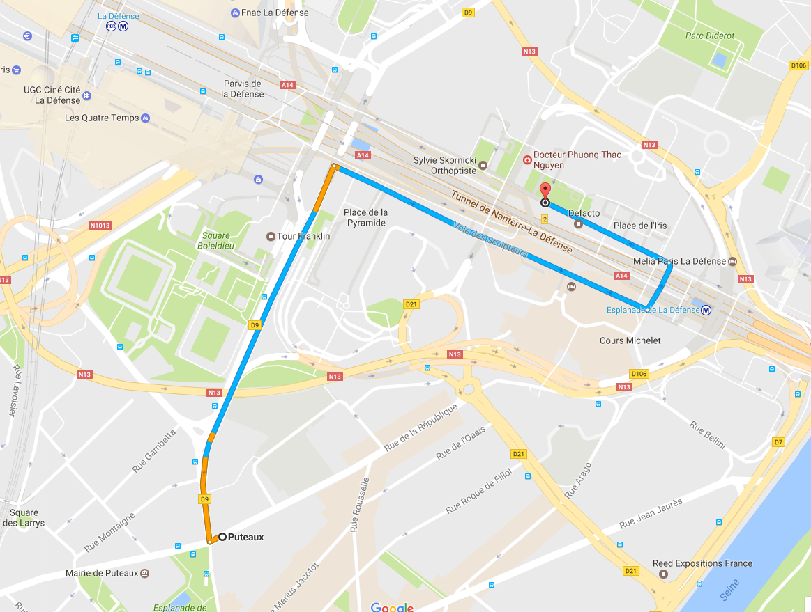
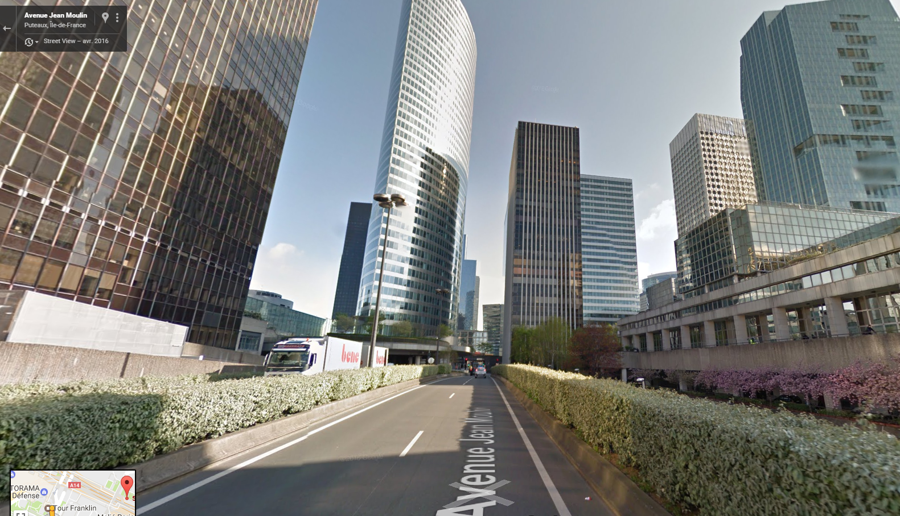
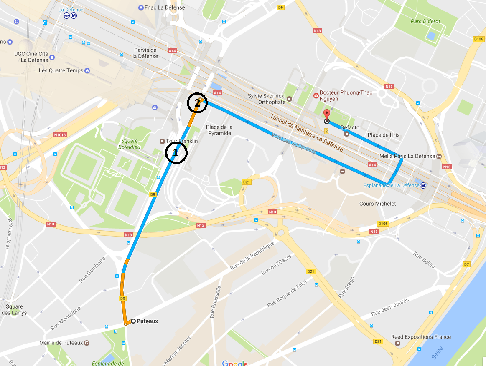
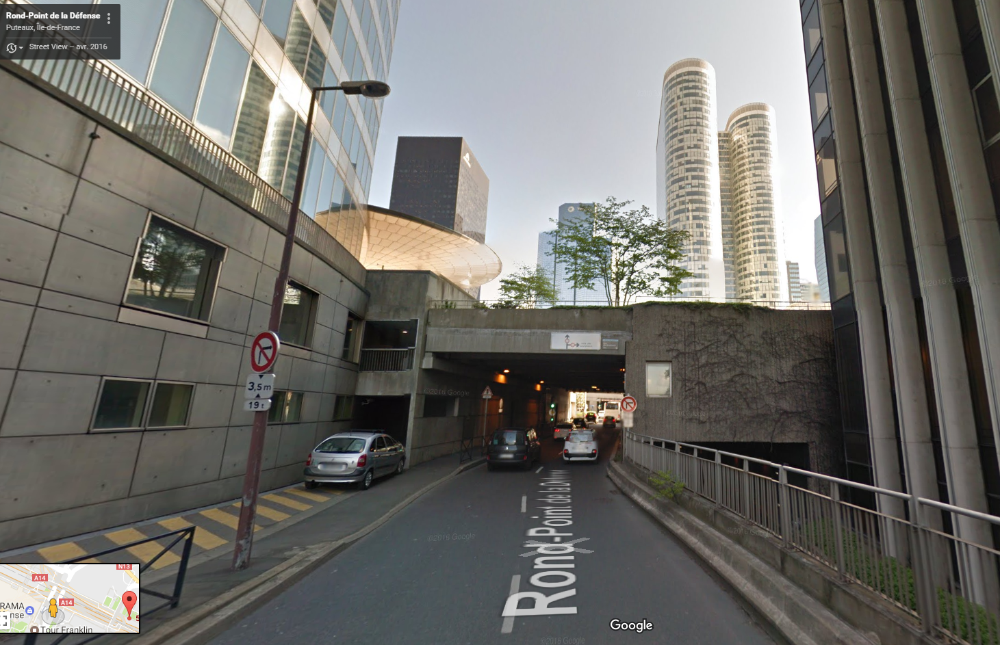
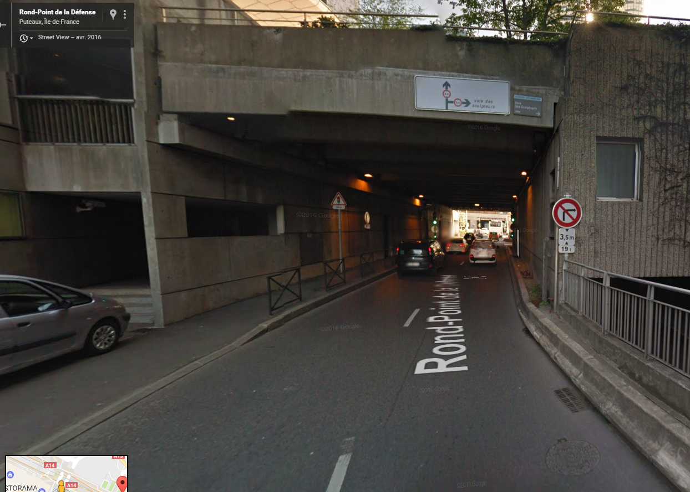
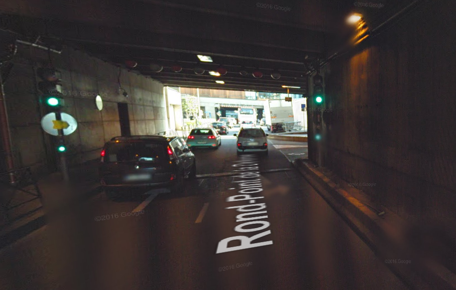

En voiture depuis Puteaux
Depuis Puteaux (ou en passant par Puteaux), direction La Défense Centre. Le trajet passe par la Voie des Sculpteurs.

-
Vous êtes au point 1 quand vous voyez ceci.

-
Au point 2, vous approchez d'un petit tunnel avec le panneau Voie des Sculpteurs en haut. Prenez la première à droite.


-
Sous le tunnel, un feu. Juste après le feu, à droite.


En résumé : vous descendez dans la Voie des Sculpteurs (impasse, station métro Esplanade de la Défense au bout), puis vous tournez à gauche pour remonter dans la Voie des Bâtisseurs.